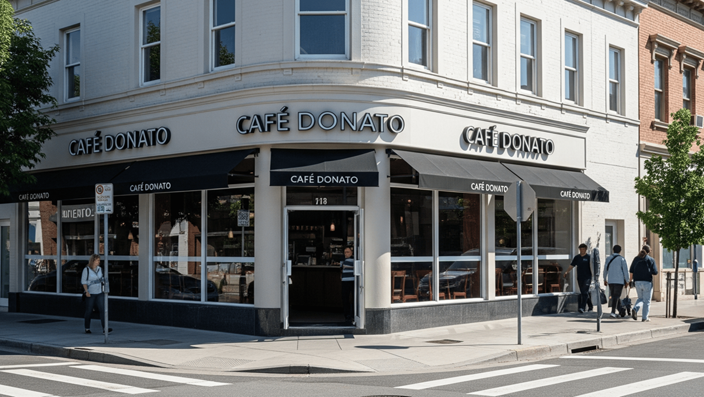

Nuestros Locales
Vení a disfrutar la experiencia Donato en nuestros espacios diseñados para vos.

Casa Central - Parque Patricios
Nuestro primer local, donde nació todo. Un espacio industrial con alma de barrio.
- Dirección: Av. Caseros 2800, CABA
- Horarios: Lun-Vie: 8:00 - 20:00 | Sáb-Dom: 9:00 - 21:00
- Teléfono: +54 11 4567-8901

Donato Express - San Telmo
Pensado para los que están en movimiento pero no quieren sacrificar calidad.
- Dirección: Defensa 1200, CABA
- Horarios: Todos los días: 7:30 - 19:00
- Teléfono: +54 11 4567-8902
Próximamente
Estamos trabajando para estar más cerca tuyo. ¡Nuevas aperturas en 2025!